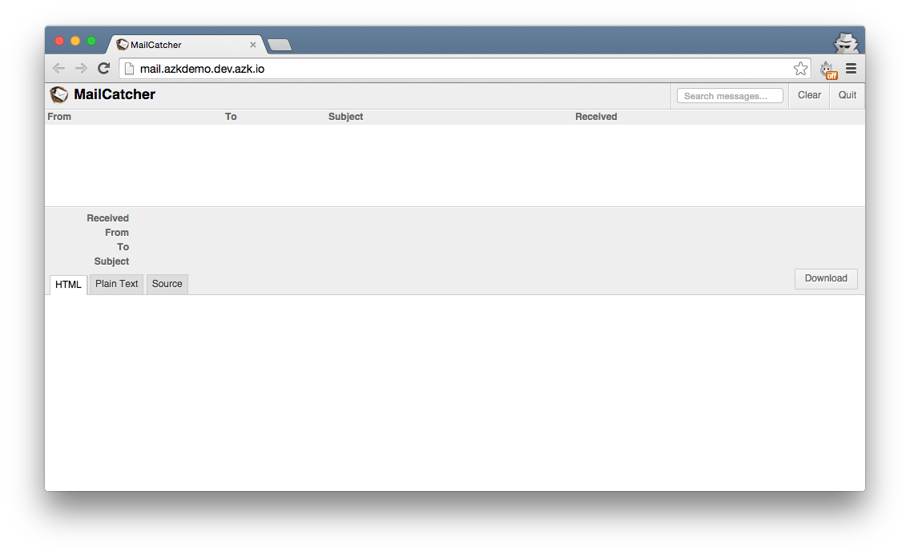
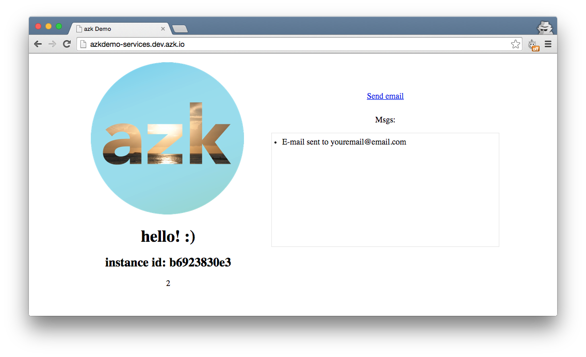
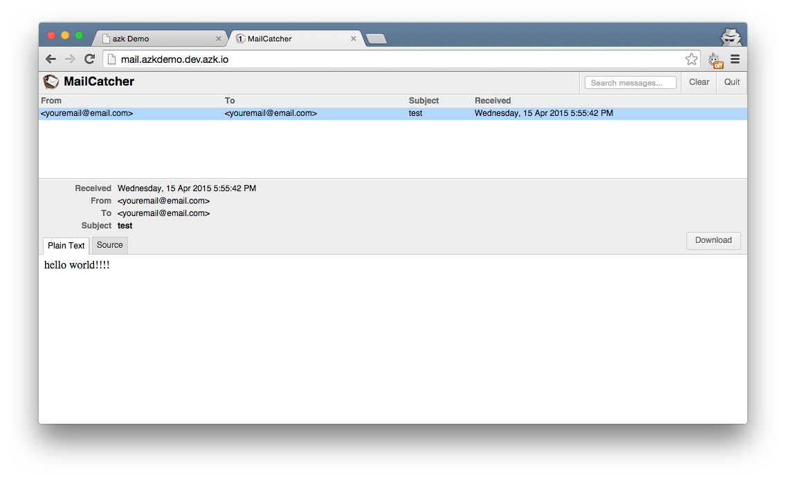

- Introdução
- 1. Instalação
- 2. Começando
- 3. Azkfile.js
- 4. Botão `Run Project`
- 5. Começando uma aplicação do zero
- 6. Adicionando serviços
- 7. Agent
- 8. Imagens
- 9. Deploy
- 10. Contribuindo
- 11. Referência
- 12. FAQ
- 13. Troubleshooting
- 14. Termos de Uso
- Publicado com GitBook
MailCatcher

Screenshot da página do GitHub do MailCatcher
Nota: Você pode checar o resultado final na branch mailcatcher-final do projeto azkdemo-services.
MailCatcher é um projeto open-source que executa um servidor SMTP que pega qualquer mensagem enviada a ele, e a exibe em uma interface web. Se você percebeu nós já temos um link "Send email" que podemos clicar, mas nada acontece. O que nós vamos fazer é adicionar um método que, quando o botão é clicado, irá enviar um email para o MailCatcher, e então podemos facilmente inspecioná-lo em sua interface web.
Vamos começar adicionando nosso sistema MailCatcher ao Azkfile.js. Abra ele e abaixo do sistema redis adicione o seguinte:
redis: {
...
}
// MailCatcher system
mail: {
// Dependent systems
depends: [],
// More images: http://images.azk.io
image: {"docker": "schickling/mailcatcher"},
http: {
domains: [
"#{system.name}.azkdemo.#{azk.default_domain}",
],
},
ports: {
// exports global variables
http: "1080/tcp",
smtp: "1025/tcp",
},
},
Agora vamos executar o sistema mail e verificar que ele está funcionando:
$ azk start mail
Você deverá ver o seguinte resultado:
┌───┬─────────────────────┬───────────┬────────────────────────────────────┬────────────────────────────┬──────────────┐
│ │ System │ Instances │ Hostname/url │ Instances-Ports │ Provisioned │
├───┼─────────────────────┼───────────┼────────────────────────────────────┼────────────────────────────┼──────────────┤
│ ↑ │ mail │ 1 │ http://mail.azkdemo.dev.azk.io │ 1-smtp:49358, 1-http:49357 │ - │
├───┼─────────────────────┼───────────┼────────────────────────────────────┼────────────────────────────┼──────────────┤
│ ↑ │ redis │ 1 │ dev.azk.io │ 1-6379:49351 │ - │
├───┴─────────────────────┴───────────┴────────────────────────────────────┴────────────────────────────┴──────────────┤
│ ↑ │ azkdemo-services │ 1 │ http://azkdemo-services.dev.azk.io │ 1-http:49352 │ - │
└───┴─────────────────────┴───────────┴────────────────────────────────────┴────────────────────────────┴──────────────┘
Agora, abra a URL do sistema mail: http://mail.azkdemo.dev.azk.io e você deverá ver a interface do MailCatcher:

Nosso próximo passo será adicionar a funcionalidade de envio de e-mail para a nossa aplicação. Abra o arquivo src/index.js. Nós já criamos uma rota get para o endpoint /mail endpoint, então vamos usar ela. Ao invés de escrever tudo dentro dessa função, vamos criar um novo arquivo chamado send_email.js dentro da pasta src.
$ touch src/send_email.js
Abra seu arquivo recém-criado e adicione o seguinte:
var transporter = null;
if (process.env.MAIL_SMTP_HOST) {
var nodemailer = require('nodemailer');
var smtpTransport = require('nodemailer-smtp-transport');
transporter = nodemailer.createTransport(smtpTransport({
host: process.env.MAIL_SMTP_HOST,
port: process.env.MAIL_SMTP_PORT,
ignoreTLS: true
}));
}
module.exports = function(req, response) {
if (transporter) {
var mail = {
from: 'youremail@email.com',
to: 'youremail@email.com',
subject: 'test',
text: 'hello world!!!!'
};
transporter.sendMail(mail, function(err, mailResult) {
var msg = 'E-mail sent to ' + mail.from;
response.end(msg);
});
} else {
response.end('mail not active, try azk start mail');
console.log('transporter:', transporter);
console.log('process.env.MAIL_SMTP_HOST:', process.env.MAIL_SMTP_HOST);
console.log('process.env.MAIL_SMTP_PORT:', process.env.MAIL_SMTP_PORT);
}
}
Vamos usar os módulos nodemailer e o nodemailer-smtp-transport para enviar um email para o nosso servidor SMTP do MailCatcher. Volte para o arquivo src/index.js e mude o endpoint /mail para o seguinte:
// Send mail
app.get('/mail', require('./send_email.js'));
O nosso endpoint está pronto para enviar um email. Agora vamos fazer com que o link "Enviar e-mail" esteja conectado a esse endpoint /mail. Abra o views/home/index.ejs e adicione o seguinte script abaixo da tag script jquery:
<script>
var ajaxUrl = "/mail";
$(document).ready(function() {
$('#btn_send').on('click', function(e){
$.get(ajaxUrl, function(result){
$('#emails_received').append('<li>' + result + "</li>");
});
e.preventDefault();
});
var socket = io.connect();
socket.on('msgs', function(data) {
console.log(data);
$('#emails_received').append("<li>ngrok: " + data + "</li>");
});
});
</script>
Ok, então agora temos quase tudo pronto! Nós só precisamos de um último passo para fazer com que tudo funcione corretamente. Você deve ter notado que em nosso arquivo src/send_email.js temos duas variáveis de ambiente, process.env.MAIL_SMTP_HOST e process.env.MAIL_SMTP_PORT. Elas vêm do sistema mail, por isso precisamos adicioná-lo como dependência do nosso sistema node para que essas variáveis possam também estar disponíveis para ele. Abra o seu Azkfile.js e dentro de azkdemo-services no parâmetro depends adicione:
'azkdemo-services': {
// Dependent systems
depends: ["mail", "redis"],
...
},
...
}
Agora estamos com tudo pronto! Vamos testar nossa aplicação, execute:
$ azk restart
Abra o URL para a nossa aplicação Node.js e clique em "Send email": http://azkdemo-services.dev.azk.io você deverá ver:

E se você abrir a URL para a nossa aplicação MailCatcher, você deverá ser capaz de ver o email enviado pela nossa aplicação e seu conteúdo: http://mail.azkdemo.dev.azk.io

E é só isso! Na próxima seção, vamos cobrir como adicionar o ngrok a sua aplicação para que você possa testar webhooks. :)
Nota: Você pode checar o resultado final na branch mailcatcher-final do projeto azkdemo-services.